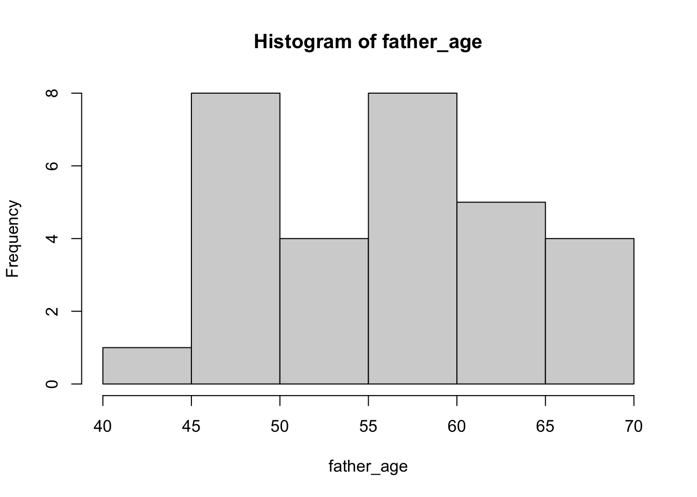
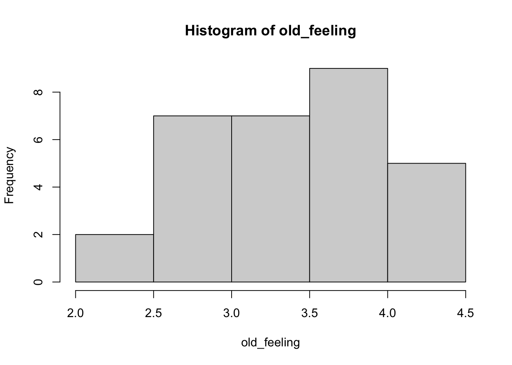
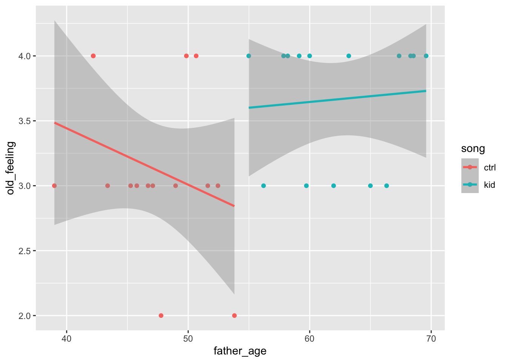
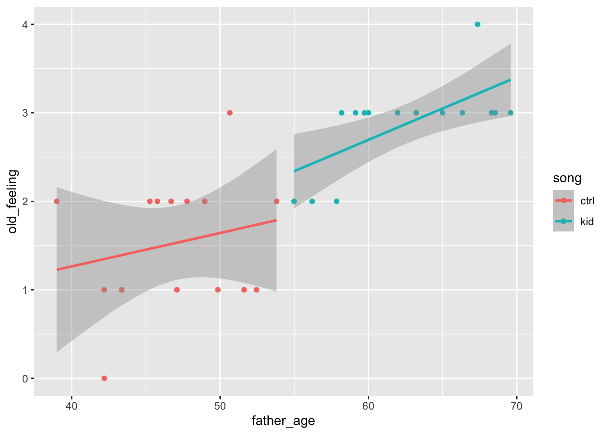

There is one covariate, father’s age. Let’s say that these are uniformly distributed between 40 and 70.
Note
A uniform distribution means that values are equally likely in some interval.
Sometimes this is called a ‘boxcar’ or ‘rectangular’ distribution.
father_age <-runif(n =30, min =40, max =70)hist(father_age)

And there is one dependent (outcome) measure that is the focus, “How old do you feel right now?”, with five options: very young, young, neither young nor old, old, and very old. Let’s give these ratings numbers between 1 and 5, and let’s say that the average rating for the “kid” group was 3.75 and the average rating for the “ctrl” group was 3. We’ll assume that each of the groups ratings are normally distributed around these two means.
old_feeling <-c(rnorm(15, mean =3.75, sd =0.5), rnorm(15, mean =3, sd =0.5))hist(old_feeling)

But of course since respondents only give integer (1, 2, 3, 4, 5) ratings, we have to change the continuous scores to integer values.
Now, let’s plot this to show how analysis of covariance (ANCOVA) might work.
Note
My graduate statistics professor, Dr. Mike Meyer, always exhorted us to “plot our data!” That is, he thought we should always plot first, then run our statistics later. I’ve taken that advice to heart in my own work.
library(tidyverse)
── Attaching core tidyverse packages ──────────────────────── tidyverse 2.0.0 ──
✔ dplyr 1.1.4 ✔ readr 2.1.5
✔ forcats 1.0.0 ✔ stringr 1.5.1
✔ ggplot2 3.5.1 ✔ tibble 3.2.1
✔ lubridate 1.9.3 ✔ tidyr 1.3.1
✔ purrr 1.0.2
── Conflicts ────────────────────────────────────────── tidyverse_conflicts() ──
✖ dplyr::filter() masks stats::filter()
✖ dplyr::lag() masks stats::lag()
ℹ Use the conflicted package (<http://conflicted.r-lib.org/>) to force all conflicts to become errors
false_pos_study_1 |>ggplot() +aes(x = father_age, y = old_feeling, color = song) +geom_point() +geom_smooth(method = lm) # linear fit
This plot adds two lines to the data, one for each song group. The ANCOVA will let us evaluate whether the old_feeling is predicted by a linear combination of father_age and song.
In the code below, notice that we set formula = old_feeling ~ song + father_age. This is how we tell the aov() command that the linear combination (sum) of song and father_age are the variables we want to use to predict old_feeling.
glm_ancova <-aov(formula = old_feeling ~ song + father_age, data = false_pos_study_1)summary(glm_ancova)
Df Sum Sq Mean Sq F value Pr(>F)
song 1 5.633 5.633 21.693 7.65e-05 ***
father_age 1 2.322 2.322 8.941 0.00589 **
Residuals 27 7.012 0.260
---
Signif. codes: 0 '***' 0.001 '**' 0.01 '*' 0.05 '.' 0.1 ' ' 1
Now, let’s imagine that father_age wasn’t entirely random for some reason. That is, what if father_age was systematically related to the order in which we sampled participants.
false_pos_study_1a <-data.frame(sub_id =1:30, song, father_age, old_feeling)false_pos_study_1a |>ggplot() +aes(x = father_age, y = old_feeling, color = song) +geom_point() +geom_smooth(method = lm) # linear fit
`geom_smooth()` using formula = 'y ~ x'

glm_ancova <-aov(formula = old_feeling ~ song + father_age, data = false_pos_study_1a)summary(glm_ancova)
Df Sum Sq Mean Sq F value Pr(>F)
song 1 5.633 5.633 18.876 0.000177 ***
father_age 1 1.275 1.275 4.274 0.048414 *
Residuals 27 8.058 0.298
---
Signif. codes: 0 '***' 0.001 '**' 0.01 '*' 0.05 '.' 0.1 ' ' 1
Or, maybe worse, that how old participants’ felt somehow related to their fathers’ age.
old_feeling <- (father_age-40)/(70-40) +rnorm(n=30, 0, 0.25)old_feeling <-round(old_feeling/(max(old_feeling)-min(old_feeling))*4+1, 0)false_pos_study_1b <-data.frame(sub_id =1:30, song, father_age, old_feeling)false_pos_study_1b |>ggplot() +aes(x = father_age, y = old_feeling, color = song) +geom_point() +geom_smooth(method = lm) # linear fit
`geom_smooth()` using formula = 'y ~ x'

glm_ancova <-aov(formula = old_feeling ~ song + father_age, data = false_pos_study_1b)summary(glm_ancova)
Df Sum Sq Mean Sq F value Pr(>F)
song 1 10.800 10.800 27.9 1.43e-05 ***
father_age 1 9.949 9.949 25.7 2.52e-05 ***
Residuals 27 10.451 0.387
---
Signif. codes: 0 '***' 0.001 '**' 0.01 '*' 0.05 '.' 0.1 ' ' 1
Warning
Professor Myer was absolutely right.
You have to plot your data to know what’s going on.
And, you have to think long and hard about it, too.
Don’t fool yourself!
References
Simmons, J. P., Nelson, L. D., & Simonsohn, U. (2011). False-positive psychology: Undisclosed flexibility in data collection and analysis allows presenting anything as significant. Psychological Science, 22(11), 1359–1366. https://doi.org/10.1177/0956797611417632